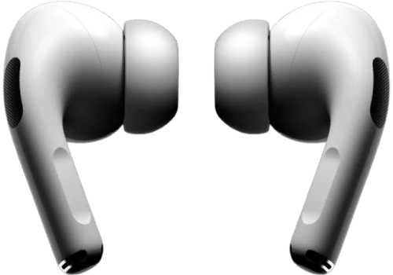
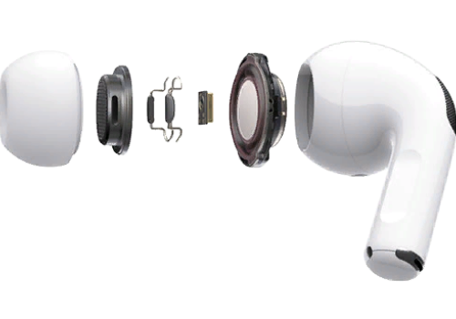
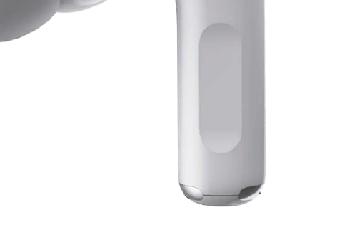

Вкладыши нужного размера
Выбирайте подходящие вкладыши и слушайте любимые хиты много часов
подряд, забыв о дискомфорте. AirPods Pro укомплектованы тремя парами силиконовых
вкладышей разного размера, которые плотно фиксируются на корпусе наушника.
Уникальная форма вкладышей с конической полостью внутри помогает наушникам
подстроится под анатомические особенности уха для надежной и мягкой посадки.

Окружите себя музыкой
Уникальная технология активного шумоподавления учитывает массу
факторов, в том числе форму вашего уха и положение наушников, чтобы отсечь все
внешние звуки и позволить вам сосредоточиться на музыке. Наружный микрофон
улавливает посторонние звуки, после чего они компенсируются обратной звуковой волной
аналогичной амплитуды. Даже на людной улице вы сможете слушать музыку и
разговаривать по телефону, не обращая внимания на городской шум.
Такого звучания вы не слышали
Наушники AirPods Pro с адаптивным эквалайзером учитывают форму
уха и посадку и автоматически регулируют параметры воспроизведения для получения
идеально сбалансированного, мощного и чистого звучания.

Настройка звука
Драйвер с широкой амплитудой сводит к минимуму искажения и
обеспечивает мощный, насыщенный и глубокий бас. AirPods Pro анализируют выходные
параметры звука, и на основе полученных данных происходит точная настройка средних и
низких частот.
Воплощение передовых технологий
Инновационная архитектура System in Package учитывает строение
человеческого уха и обеспечивает максимальный комфорт и непревзойденное качество
звучания. 10-ядерный чип Н1 от Apple минимизирует задержку при воспроизведении
музыки и позволяет осуществлять шумоподавление в реальном времени.

Легкое и удобное управление
Простым нажатием на датчик на корпусе можно выбирать режимы
воспроизведения (шумоподавление или прозрачный), а также управлять музыкальными
треками и звонками.
Много часов музыки
С учетом ресурса зарядного футляра вам обеспечено до 24 часов
воспроизведения музыки. Футляр заряжается проводным способом и поддерживает
беспроводную зарядку по стандарту Qi. На одном заряде наушники работают без перерыва
до 4.5 часов. Всего 5 минут в футляре – и вы сможете слушать музыку еще целый час.
Активное шумоподавление
Когда звук создаёт тишину.
AirPods Pro — уникальные наушники с технологией активного
шумоподавления, которые непрерывно оптимизируют звучание с учётом формы вашего уха и положения
вкладышей. Они отлично заглушают внешние шумы, поэтому вы можете полностью погрузиться в музыку.
Наружный микрофон улавливает внешние шумы.
Эти шумы компенсируются обратной звуковой волной той же амплитуды
— прежде чем вы их услышите.
Внутренний микрофон анализирует звук внутри уха и таким же
образом подавляет оставшийся шум обратной звуковой волной.
Активное шумоподавление анализирует аудио с частотой 200 раз
в секунду. Ничто не будет отвлекать вас от музыки, подкастов и телефонных разговоров.
Закажи эти наушники прямо сейчас!
Откройте для себя новые возможности благодаря Airpods.